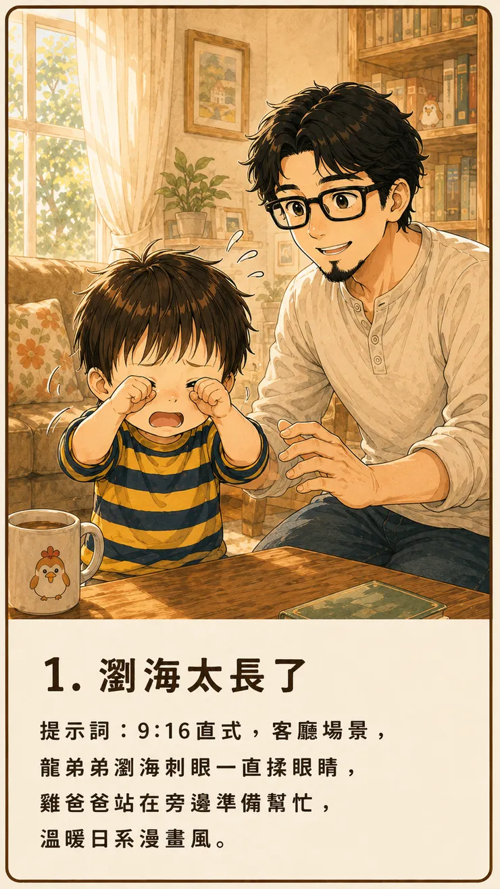
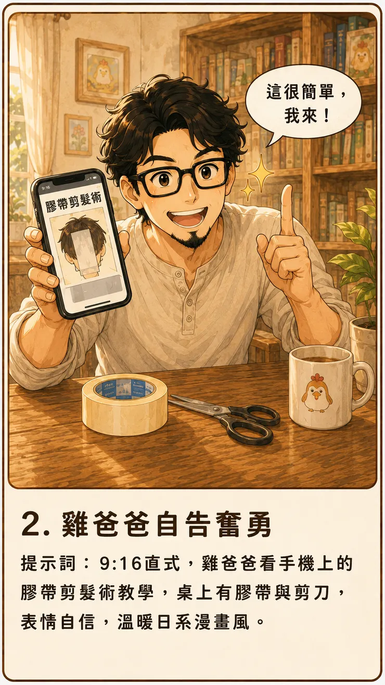
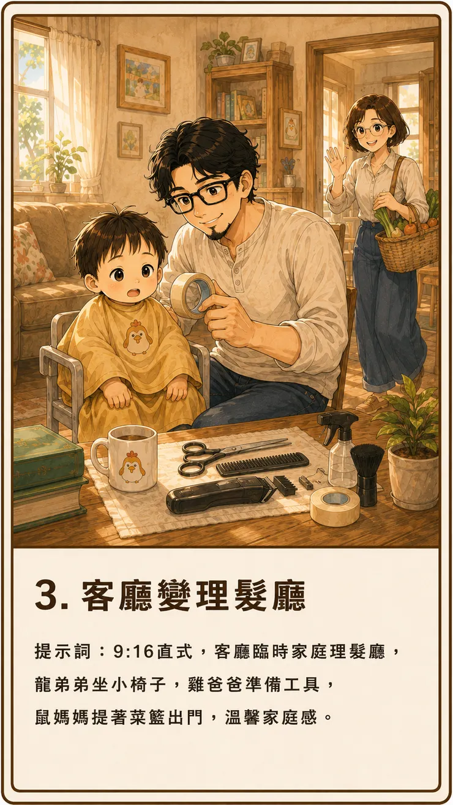
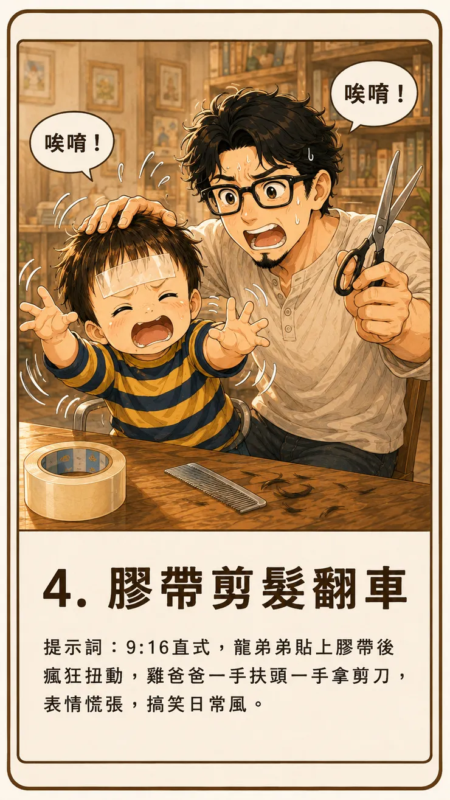
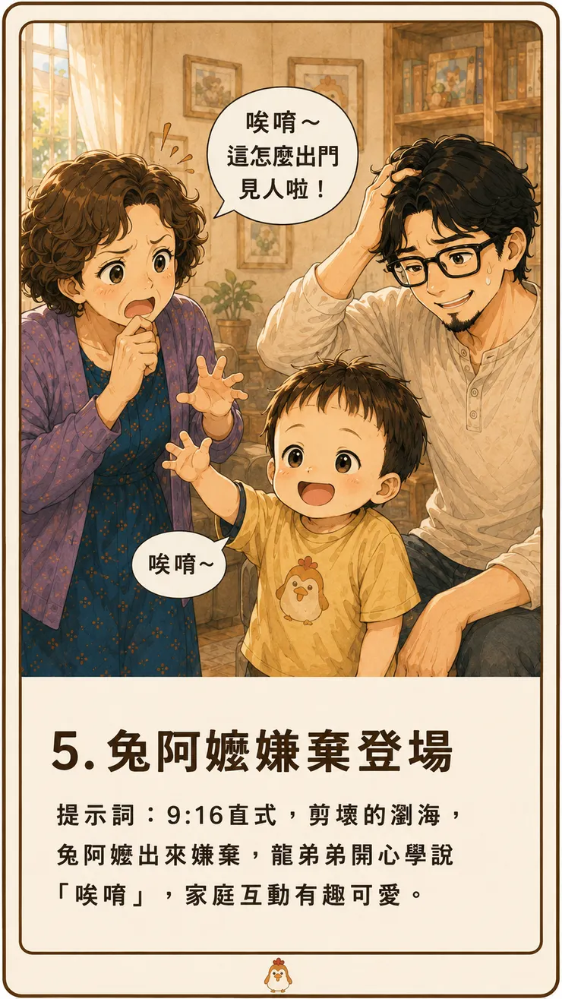
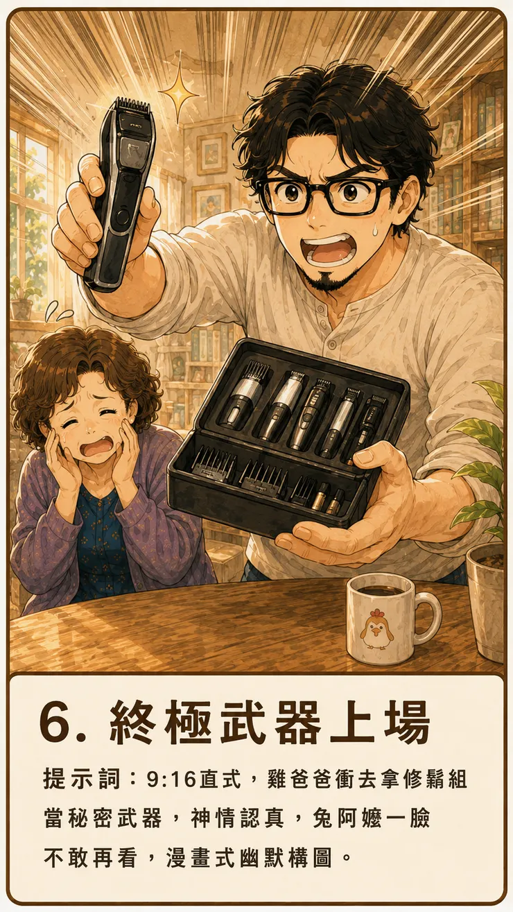
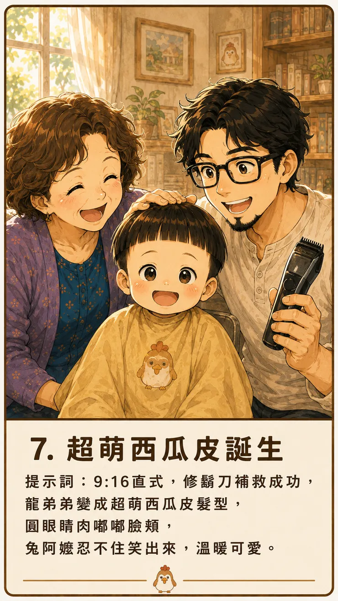
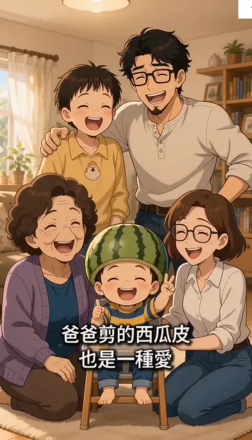

從龍弟弟阿格的一次成功，到龍弟弟家庭理髮的全面翻車。原來影片生成AI最難理解的，不一定是複雜的運鏡，而是台灣人一句理所當然的「西瓜皮」，或者是全家人。
今天早上，雞爸爸看了一篇 Seedance2的文章，因為覺得之前阿格的影片有很多細節沒有達到雞爸爸的標準，譬如龍弟弟應該不會說話、兔阿嬤臉變形，於是想重新製作一次龍弟弟吃「阿格」的短影音。結果不論人物畫風、音效，整體感覺意外符合雞爸爸想要的。
包含龍弟弟看到優格，開心地跳上跳下喊著「阿格！阿格！」，到兔阿嬤拿起湯匙餵他，人物動作順暢、表情自然，整體效果比原本預期的還要好。
嵌入內容：https://www.youtube-nocookie.com/embed/SC5Z0nlXuV4
看著順利生成的影片，雞爸爸的信心也跟著生成了。
既然「龍弟弟吃阿格」都能做出來，前幾天小妾幫雞爸爸製作的「龍弟弟家庭理髮」分鏡圖，畫面清楚、情節完整，有八個分鏡可參考，做成影片應該不錯，便想拿來試試手感。







Seedance 2.0 官方主打可同時參考文字、圖片、聲音與影片，強調對人物表演、光影和運鏡的控制能力。(字節跳動 Seed) 雞爸爸看著分鏡，自信地想：「這很簡單，我來！」
原來「西瓜皮」歪國人完全聽不懂
影片的分鏡圖片很單純，文字說明也寫得很明白。雞爸爸等待的過程中，還非常期待龍弟弟變身童年回憶經典西瓜皮的畫面。殊不知ＡＩ判斷出來的：
龍弟弟剪完頭髮，露出可愛的西瓜皮髮型。

居然是長這樣子的啊．．．而且，雞爸爸旁邊的短髮女生，小姐，妳哪位啊？
雞爸爸不信邪，換了提示詞，強調「西瓜皮」只是一種髮型的名稱，不是真的西瓜．．．結果畫面越來越驚悚，從一開始剪頭髮像放柚子一樣放上去，到後來直接從頭中間剃光套一整個西瓜進去剩眼睛．．．生成結果不是戴著一頂西瓜安全帽，就是戴一整顆西瓜。
雞爸爸只好反覆請小妾調整提示詞，越寫越長：
瀏海呈水平直線，位於眉毛上方，兩側頭髮沿著頭型形成圓弧，整體像倒扣的碗，一歲半男童的短髮造型。
結果，西瓜皮還是沒有出現。雖然沒看到龍弟弟各種西瓜頭飾，但是來代言生髮水的嗎？
雞爸爸終於知道 每顆西瓜都是農夫的心血結晶
颱風季節過後的水果和蔬菜價格，總是貴得離譜。然而真正讓雞爸爸親身理解這個道理，不是之前去農場下田種菜、拔菜，而是今天看到的西瓜。
過程中每一顆西瓜，都是雞爸爸用心播種、製作分鏡、根據成果修改提示詞，經過時間的淬鍊，細心地等待，過程中不能讓網頁跳掉、當掉，一旦結果不如預期，就要在思考如何重新來過。
西瓜皮看不懂，再生成一次。請務必不能出現任何跟西瓜的任何水果，再生成一次。
有一個買菜回家的鼠媽媽和一個在家幫忙拿剪刀的鼠媽媽，再生成一次。
好不容易看到最後一幕，明明只想呈現一家人看到成果後笑成一團，畫面裡卻突然多出好幾位不認識的小孩。原本只有一個龍弟弟，生成到結尾時，竟然像開啟了影分身。
每一個生成都是時間、雞爸爸購買的點數也像剛剪下來的瀏海，一撮一撮地掉在地上。忙了一個早上，沒有作出可以用的影片，雞爸爸的錢包倒是先完成了一次家庭理髮。
原來AI能作漂亮畫面，卻不一定懂我們的生活
後來雞爸爸才發現，問題可能不只是提示詞寫得不夠詳細。「西瓜皮」對於台灣家庭是再平凡不過的名詞，不只是一種髮型，甚至是一種童年記憶。
是那種媽媽拿著剪刀，在孩子額頭前面比了半天；是剪完之後覺得歪歪的，又忍不住再補一刀；也是長大後翻到照片，才發現自己曾經頂著一顆圓滾滾瀏海，還笑得非常開心。
我們只要說出「西瓜皮」，腦中馬上就會浮現那個畫面，但是對AI來說，「西瓜皮」可能是西瓜的皮，可能只是一個模糊的名詞，即便給了圖片和定義。即便AI能夠生成華麗的光影、流暢的運鏡和看起來很厲害的人物表情，卻未必理解一句充滿在地生活經驗的稱呼。
雞爸爸以為自己正在下指令，AI可能覺得自己正在猜謎。
分鏡完成，不代表影片就完成了
這次跟不同AI們跨平台的協作，最大的心得是：好看的分鏡圖，只代表小妾已經能夠充分理解雞爸爸一家的角色設定、故事脈絡，也能夠透過圖片畫出來、文字說明出來，但並不代表Firefly或DeeVid能夠把它原封不動地演出來。
從靜態圖片變成影片，中間還隔著人物一致性、動作幅度、鏡頭移動、物件位置和角色數量。拿了菜籃和買菜回來的鼠媽媽被認成兩個人，嫌棄髮型的兔阿嬤和笑開懷的兔阿嬤也變成兩個人，甚至改到了最後，AI熱情地幫雞爸爸邀請了一整個陌生家庭進場。
於是雞爸爸開始明白，使用AI製作影片時，自己的角色不只是提供故事的人。還要當導演、場記、剪輯師，以及負責把「台灣爸爸語言」翻譯成「AI看得懂語言」的人。
AI不懂的除了西瓜皮 還有什麼是一家人
忙了一早上，點數用光了，最後還是沒有得到理想中的西瓜皮影片，說不失望是騙人的。
但回頭看看真正的家庭理髮照片，龍弟弟頂著那顆有點圓、有點歪，又明顯帶著雞爸爸手感的瀏海，反而比AI生成的每一個完美鏡頭都更可愛。
AI可以模擬剪刀、模擬膠帶，也可以模擬一家人開心大笑。
但它不像我們一家人的默契，一說到龍弟弟的西瓜皮，雞爸爸那時的手忙腳亂、兔阿嬤想到雞爸爸的小時候，以及龍弟弟開心的「唉唷~唉唷~」，全家人笑得很開心的瞬間。
今天的影片沒有成功，卻確認了一件事：家庭故事可以被翻拍成動畫，但真正珍貴的，是那些無法重拍，也不一定能被AI理解的生活現場。
至於那一堆生成失敗的影片，雞爸爸決定先留著。
畢竟，等龍弟弟長大以後，除了可以讓他看看爸爸親手剪出的西瓜皮，還可以順便告訴他：「你看，爸爸當年為了重現這顆頭，連AI都被我逼瘋了。」